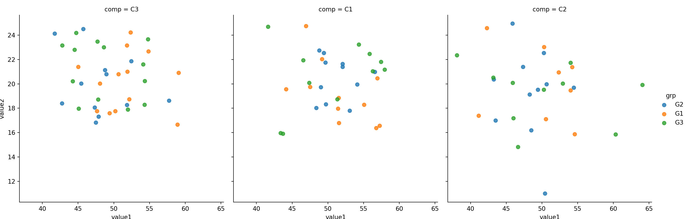
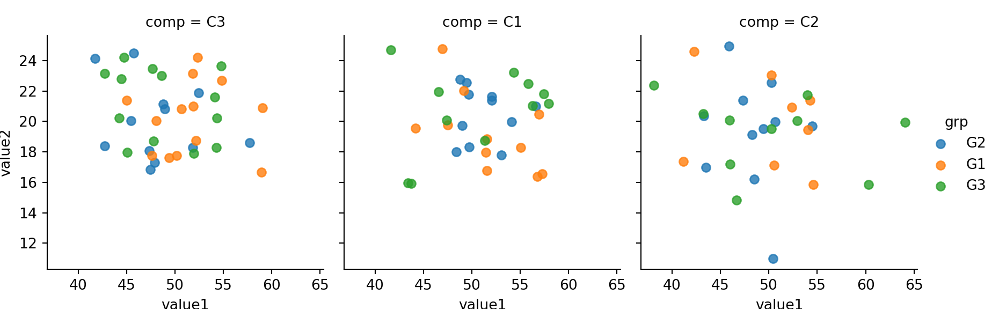
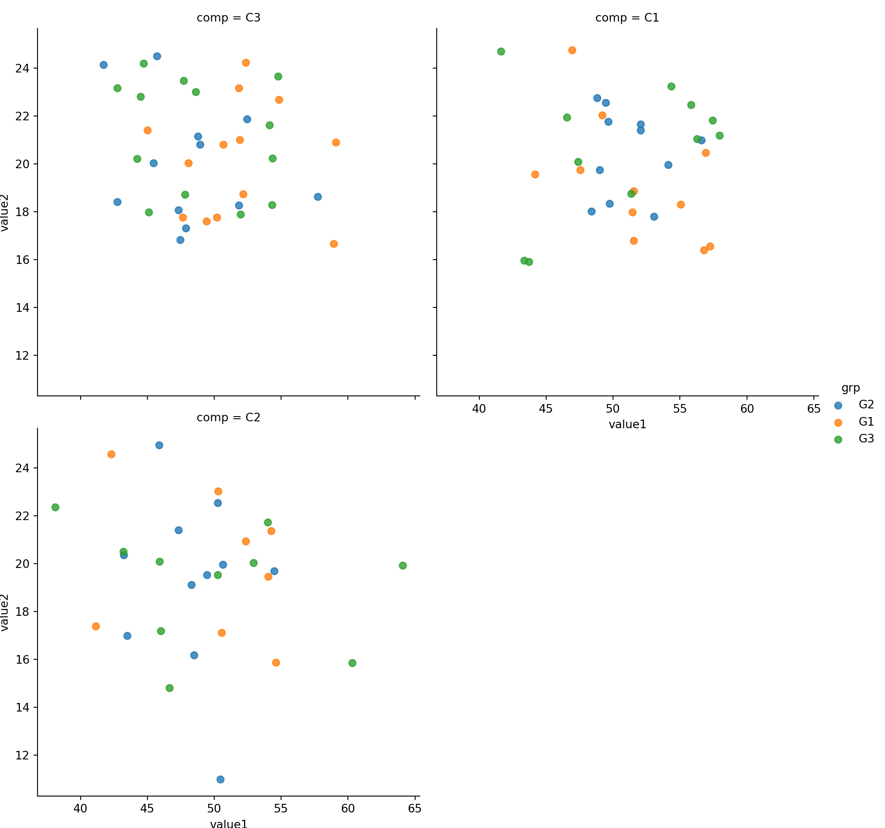

15 seaborn
15.1 Seaborn and Matplotlib
- seaborn returns a matplotlib object that can be modified by the options in the pyplot module
- Often, these options are wrapped by seaborn and .plot() in pandas and available as arguments
15.2 Sample Data
n = 100
comp = ['C' + i for i in np.random.randint( 1,4, size = n).astype(str)] # 3x Company
dept = ['D' + i for i in np.random.randint( 1,4, size = n).astype(str)] # 5x Department
grp = ['G' + i for i in np.random.randint( 1,4, size = n).astype(str)] # 2x Groups
value1 = np.random.normal( loc=50 , scale=5 , size = n)
value2 = np.random.normal( loc=20 , scale=3 , size = n)
value3 = np.random.normal( loc=5 , scale=30 , size = n)
mydf = pd.DataFrame({
'comp':comp,
'dept':dept,
'grp': grp,
'value1':value1,
'value2':value2,
'value3':value3
})
mydf.head()#:> comp dept grp value1 value2 value3
#:> 0 C3 D1 G2 48.773558 21.140578 18.893962
#:> 1 C3 D2 G1 49.409465 17.600208 -33.599614
#:> 2 C1 D2 G1 55.064244 18.296204 -14.065949
#:> 3 C1 D2 G2 56.584821 20.982121 44.580671
#:> 4 C1 D1 G1 56.932897 20.464055 -10.01448415.3 Scatter Plot
15.3.1 2x Numeric
sns.lmplot(x='value1', y='value2', data=mydf)plt.show()
sns.lmplot(x='value1', y='value2', fit_reg=False, data=mydf); #hide regresion lineplt.show()
15.3.2 2xNumeric + 1x Categorical
Use hue to represent additional categorical feature
sns.lmplot(x='value1', y='value2', data=mydf, hue='comp', fit_reg=False);
plt.show()
15.3.3 2xNumeric + 2x Categorical
Use col and hue to represent two categorical features
sns.lmplot(x='value1', y='value2', col='comp',hue='grp', fit_reg=False, data=mydf);
plt.show()
15.3.4 2xNumeric + 3x Categorical
Use row, col and hue to represent three categorical features
sns.lmplot(x='value1', y='value2', row='dept',col='comp', hue='grp', fit_reg=False, data=mydf);plt.show()
15.3.5 Customization
15.3.5.1 size
size: height in inch for each facet
sns.lmplot(x='value1', y='value2', col='comp',hue='grp', size=3,fit_reg=False, data=mydf)plt.show()
Observe that even size is very large, lmplot will fit (shrink) everything into one row by deafult. See example below.
sns.lmplot(x='value1', y='value2', col='comp',hue='grp', size=5,fit_reg=False, data=mydf)plt.show()
15.3.5.2 col_wrap
To avoid lmplot from shrinking the chart, we use col_wrap=<col_number to wrap the output.
Compare the size (height of each facet) with the above without col_wrap. Below chart is larger.
sns.lmplot(x='value1', y='value2', col='comp',hue='grp', size=5, col_wrap=2, fit_reg=False, data=mydf)plt.show()
15.4 Histogram
seaborn.distplot(
a, # Series, 1D Array or List
bins=None,
hist=True,
rug = False,
vertical=False
)
15.5 Bar Chart
com_grp = mydf.groupby('comp')
grpdf = com_grp['value1'].sum().reset_index()
grpdf#:> comp value1
#:> 0 C1 1686.953679
#:> 1 C2 1432.875962
#:> 2 C3 1885.098141


15.6 Faceting
Faceting in Seaborn is a generic function that works with matplotlib various plot utility.
It support matplotlib as well as seaborn plotting utility.